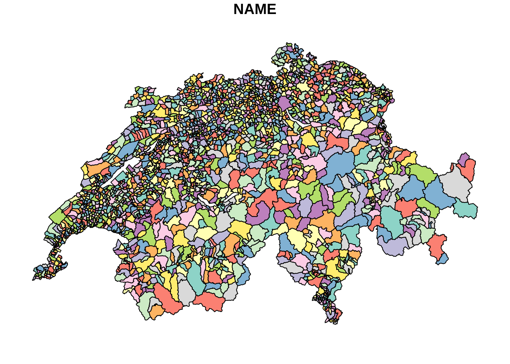
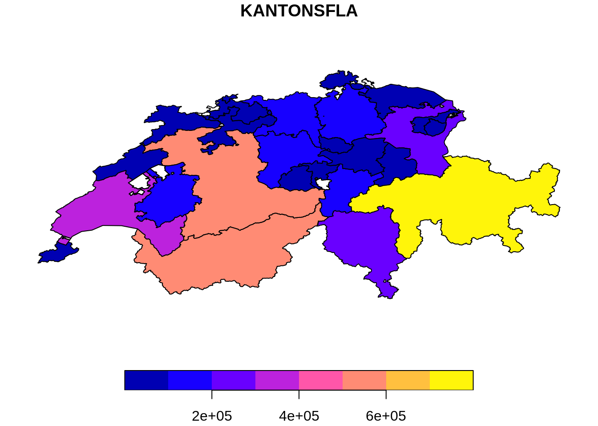
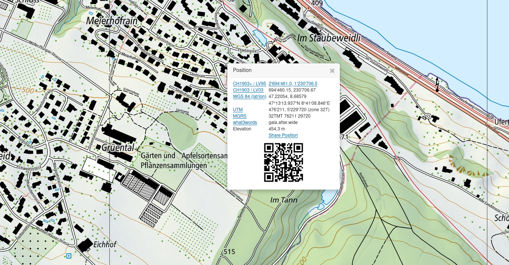
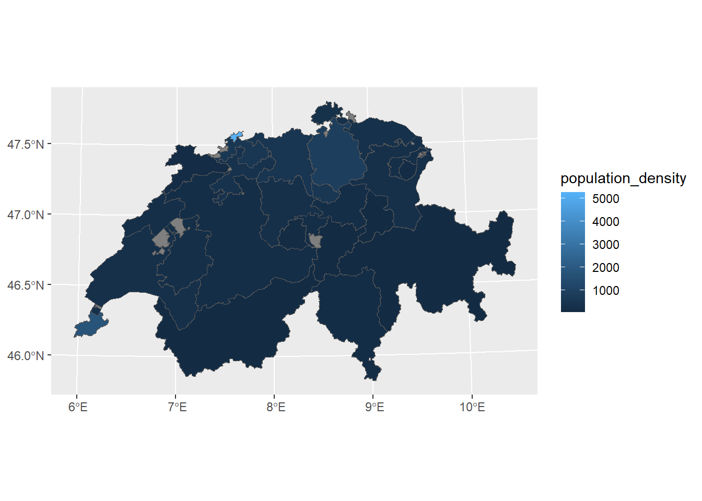
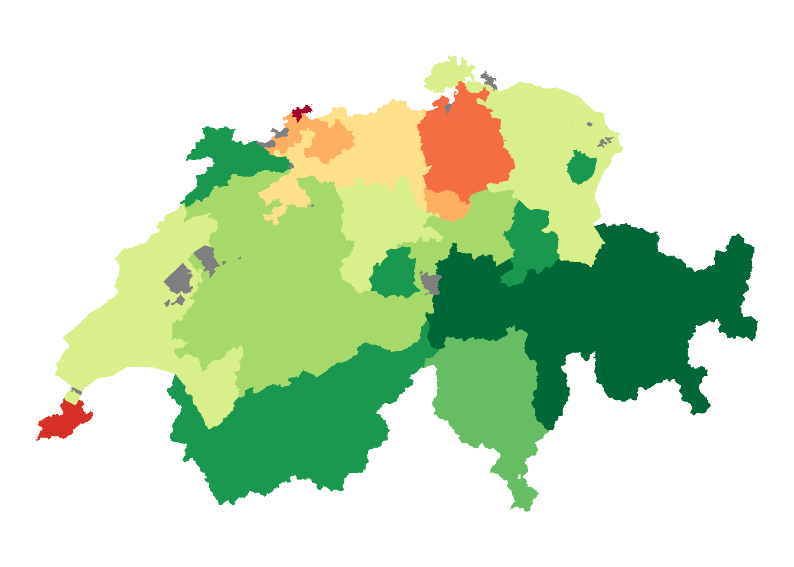
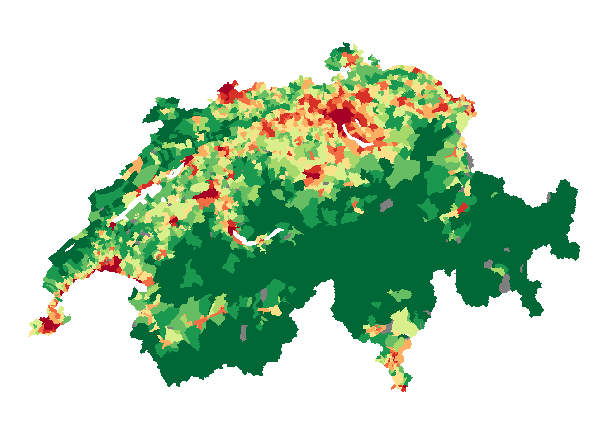

library("sf")
library("dplyr")
library("ggplot2")Rauman 1: Übung A
Es gibt bereits eine Vielzahl von Packages um in R mit räumlichen Daten zu arbeiten, die ihrerseits wiederum auf weiteren Packages basieren (Stichwort dependencies). Für Vektordaten dominierte lange das Package sp, welches nun durch sf abgelöst wurde. Wir werden wenn immer möglich mit sf arbeiten und nur in Ausnahmefällen auf andere Packages zurück greifen.
Für die kommenden Übungen könnt ihr folgende Packages installieren bzw. laden:
Aufgabe 1: Vektor Daten importieren
Importiere die Datensätze kantone.gpkg und gemeinden.gpkg wie folgt. Es handelt sich um Geodatensätze im Format Geopackage (“*.gpkg”), eine alternatives Datenformat zum bekannteren Format “Shapefiles”.
kantone <- read_sf("datasets/rauman/kantone.gpkg")
gemeinden <- read_sf("datasets/rauman/gemeinden.gpkg")Schau Dir die importierten Datensätze an.
Hinweis
Am meisten Informationen zu sf Objekten bekommst du, wenn du dir den Datensatz in der Konsole anschaust (in dem du den Variabel-Name in der Konsole eintippst). Mit dem RStudio Viewer werden sf Objekte nur sehr langsam geladen und die Metadaten werden nicht angezeigt.
Aufgabe 2: Daten visualisieren
Eine sehr einfache Möglichkeit, sf-Objekte zu visualiseren ist die base-R Funktion plot(). Führe die angegebenen R-Befehle aus und studiere die entstehenden Plots. Welche Unterschiede findest Du? Wie erklärst Du diese Unterschiede?
# ohne max.plot = 1 macht R einen Plot pro Spalte
plot(gemeinden, max.plot = 1)
# Alternativ kann man auch eine spezifische Spalte plotten
plot(kantone["KANTONSFLA"])
Input: Koodinatensysteme
In der obigen Visualierung fällt folgendes auf:
- die X/Y Achsen weisen zwei ganz unterschiedliche Zahlenbereiche auf (vergleiche die Achsenbeschriftungen)
- der Umriss der Schweiz sieht in den beiden Datensätzen unterschiedlich aus (
kantoneist gegenübergemeindengestaucht)
Dies hat natürlich damit zu tun, dass die beiden Datensätze in unterschiedlichen Koordinatensystemen erfasst wurden. Koordinatensysteme werden mit CRS (Coordinate Reference System) abgekürzt. Mit st_crs() können die zugewiesenen Koordinatensysteme abgefragt werden.
st_crs(kantone)
## Coordinate Reference System:
## User input: Undefined Cartesian SRS
## wkt:
## ENGCRS["Undefined Cartesian SRS",
## EDATUM["Unknown engineering datum"],
## CS[Cartesian,2],
## AXIS["(E)",east,
## ORDER[1],
## LENGTHUNIT["Meter",1]],
## AXIS["(N)",north,
## ORDER[2],
## LENGTHUNIT["Meter",1]]]
st_crs(gemeinden)
## Coordinate Reference System:
## User input: Undefined Cartesian SRS
## wkt:
## ENGCRS["Undefined Cartesian SRS",
## EDATUM["Unknown engineering datum"],
## CS[Cartesian,2],
## AXIS["(E)",east,
## ORDER[1],
## LENGTHUNIT["Meter",1]],
## AXIS["(N)",north,
## ORDER[2],
## LENGTHUNIT["Meter",1]]]Leider sind in unserem Fall keine Koordinatensysteme zugewiesen. Mit etwas Erfahrung kann man das Koordinatensystem aber erraten, so viele kommen nämlich gar nicht in Frage. Am häufigsten trifft man hierzulande eines der drei folgenden Koordinatensysteme an:
CH1903 LV03: das alte Koordinatensystem der SchweizCH1903+ LV95: das neue Koordinatensystem der SchweizWGS84: ein häufig genutztes, weltumspannendes geodätisches Koordinatensystem, sprich die Koordinaten werden in Länge und Breite angegeben (Lat/Lon).
Nun gilt es, anhand der Koordinaten die in der Spalte geometry ersichtlich sind, das korrekte Koordinatensystem festzustellen. Wenn man auf map.geo.admin.ch mit der rechten Maustaste einen Ort anwählt, erfährt man die Koordinaten dieses Ortes in verschiedenen Koordinatenbezugssystemen.

Wenn man diese Koordinaten mit den Koordinaten unserer Datensätze vergleicht, dann ist schnell klar, dass es sich beim Datensatz kantone um das Koordinatenbezugsystem (CRS) WGS84 handelt. Wir können diese Information nutzen um das CRS unserers Datensatzes mit st_set_crs() zu setzen.
# Zuweisen mit st_set_crs()...
kantone <- st_set_crs(kantone, "WGS84")Wenn wir die CRS Information nun abrufen, sehen wir das diese Zuweisung funktioniert hat.
# ... abfragen mit st_crs()
st_crs(kantone)
## Coordinate Reference System:
## User input: WGS84
## wkt:
## GEOGCRS["WGS 84",
## DATUM["World Geodetic System 1984",
## ELLIPSOID["WGS 84",6378137,298.257223563,
## LENGTHUNIT["metre",1]]],
## PRIMEM["Greenwich",0,
## ANGLEUNIT["degree",0.0174532925199433]],
## CS[ellipsoidal,2],
## AXIS["geodetic latitude (Lat)",north,
## ORDER[1],
## ANGLEUNIT["degree",0.0174532925199433]],
## AXIS["geodetic longitude (Lon)",east,
## ORDER[2],
## ANGLEUNIT["degree",0.0174532925199433]],
## ID["EPSG",4326]]Etwas komplizierter ist es, wenn wir das CRS vom Datensatz gemeinden setzen wollen. Im Vergleich mit map.geo.admin.ch sehen wir, dass es sich hier um das CRS CH1903+ LV95 handeln muss. Wenn wir diesen Namen für unsere CRS Zuweisung verwenden möchten, funktioniert das nicht:
# Zuweisen mit st_set_crs()...
gemeinden <- st_set_crs(gemeinden, "CH1903+ LV95")
# ... abfragen mit st_crs()
st_crs(gemeinden)Die ausgeschriebenen Namen dieser CRS sind fehleranfällig. Deshalb ist es besser, mit den jeweiligen EPSG Codes der Bezugssysteme zu arbeiten. Diese EPSG Codes kann man auf folgender Website erfahren: epsg.io/map. Es lohnt sich aber, die EPSG Codes der für uns relevanten CRS zu notieren:
- CH1903 LV03:
EPSG:21781 - CH1903+ LV95:
EPSG:2056 - WGS84:
EPSG:4326
Dieser Code können wir nutzen, um das CRS des Datensatz gemeinde zu setzen:
# Zuweisen mit st_set_crs()...
gemeinden <- st_set_crs(gemeinden, 2056)
# ... abfragen mit st_crs()
st_crs(gemeinden)
## Coordinate Reference System:
## User input: EPSG:2056
## wkt:
## PROJCRS["CH1903+ / LV95",
## BASEGEOGCRS["CH1903+",
## DATUM["CH1903+",
## ELLIPSOID["Bessel 1841",6377397.155,299.1528128,
## LENGTHUNIT["metre",1]]],
## PRIMEM["Greenwich",0,
## ANGLEUNIT["degree",0.0174532925199433]],
## ID["EPSG",4150]],
## CONVERSION["Swiss Oblique Mercator 1995",
## METHOD["Hotine Oblique Mercator (variant B)",
## ID["EPSG",9815]],
## PARAMETER["Latitude of projection centre",46.9524055555556,
## ANGLEUNIT["degree",0.0174532925199433],
## ID["EPSG",8811]],
## PARAMETER["Longitude of projection centre",7.43958333333333,
## ANGLEUNIT["degree",0.0174532925199433],
## ID["EPSG",8812]],
## PARAMETER["Azimuth of initial line",90,
## ANGLEUNIT["degree",0.0174532925199433],
## ID["EPSG",8813]],
## PARAMETER["Angle from Rectified to Skew Grid",90,
## ANGLEUNIT["degree",0.0174532925199433],
## ID["EPSG",8814]],
## PARAMETER["Scale factor on initial line",1,
## SCALEUNIT["unity",1],
## ID["EPSG",8815]],
## PARAMETER["Easting at projection centre",2600000,
## LENGTHUNIT["metre",1],
## ID["EPSG",8816]],
## PARAMETER["Northing at projection centre",1200000,
## LENGTHUNIT["metre",1],
## ID["EPSG",8817]]],
## CS[Cartesian,2],
## AXIS["(E)",east,
## ORDER[1],
## LENGTHUNIT["metre",1]],
## AXIS["(N)",north,
## ORDER[2],
## LENGTHUNIT["metre",1]],
## USAGE[
## SCOPE["Cadastre, engineering survey, topographic mapping (large and medium scale)."],
## AREA["Liechtenstein; Switzerland."],
## BBOX[45.82,5.96,47.81,10.49]],
## ID["EPSG",2056]]Jetzt wo das CRS der Datensätze bekannt ist, können wir ggplot2 nutzen um usere Daten zu visualisieren. In InfoVis 1 & 2 haben wir intensiv mit ggplot2 gearbeitet und dort die Layers geom_point() und geom_line() kennen gelernt. Zusätzlich beinhaltet ggplot die Möglichkeit, mit geom_sf() Vektordaten direkt und sehr einfach zu plotten.
Aufgabe 3: Koordinatensyteme transformieren
In der vorherigen Übung haben wir das bestehende Koordinatensystem zugewiesen. Dabei haben wir die bestehenden Koordinaten (in der Spalte geom) nicht manipuliert. Ganz anders ist eine Transformation der Daten von einem Koordinatensystem in das andere. Bei einer Transformation werden die Koordinaten in das neue Koordinatensystem umgerechnet und somit manipuliert. Aus praktischen Gründen wollen wir all unsere Daten ins neue Schweizer Koordinatensystem CH1903+ LV95 transfomieren. Transformiere den Datensatz kantone mit st_transform()in CH1903+ LV95, nutze dafür den korrekten EPSG-Code.
Vor der Transformation (betrachte die Attribute Bounding box, Projected CRS sowie die Werte in der Spalte geom):
kantone
## Simple feature collection with 51 features and 6 fields
## Geometry type: POLYGON
## Dimension: XY
## Bounding box: xmin: 5.955902 ymin: 45.81796 xmax: 10.49217 ymax: 47.80845
## Geodetic CRS: WGS 84
## # A tibble: 51 × 7
## NAME KANTONSNUM SEE_FLAECH KANTONSFLA KT_TEIL EINWOHNERZ
## * <chr> <int> <dbl> <dbl> <chr> <int>
## 1 Graubünden 18 NA 710530 0 197888
## 2 Bern 2 11897 595952 1 1031126
## 3 Valais 23 1060 522463 0 341463
## 4 Vaud 22 39097 321201 1 793129
## 5 Ticino 21 7147 281216 0 353709
## 6 St. Gallen 17 7720 202820 1 504686
## 7 Zürich 1 6811 172894 0 1504346
## 8 Fribourg 10 7818 167142 1 315074
## 9 Luzern 3 6438 149352 0 406506
## 10 Aargau 19 870 140380 1 670988
## # ℹ 41 more rows
## # ℹ 1 more variable: geom <POLYGON [°]>Nach der Transformation (betrachte die Attribute Bounding box, Projected CRS sowie die Werte in der Spalte geom):
kantone
## Simple feature collection with 51 features and 6 fields
## Geometry type: POLYGON
## Dimension: XY
## Bounding box: xmin: 2485410 ymin: 1075268 xmax: 2833858 ymax: 1295934
## Projected CRS: CH1903+ / LV95
## # A tibble: 51 × 7
## NAME KANTONSNUM SEE_FLAECH KANTONSFLA KT_TEIL EINWOHNERZ
## * <chr> <int> <dbl> <dbl> <chr> <int>
## 1 Graubünden 18 NA 710530 0 197888
## 2 Bern 2 11897 595952 1 1031126
## 3 Valais 23 1060 522463 0 341463
## 4 Vaud 22 39097 321201 1 793129
## 5 Ticino 21 7147 281216 0 353709
## 6 St. Gallen 17 7720 202820 1 504686
## 7 Zürich 1 6811 172894 0 1504346
## 8 Fribourg 10 7818 167142 1 315074
## 9 Luzern 3 6438 149352 0 406506
## 10 Aargau 19 870 140380 1 670988
## # ℹ 41 more rows
## # ℹ 1 more variable: geom <POLYGON [m]>Aufgabe 4: Tidyverse Funktionen
sf Objekte sind im wesentlichen data.frames mit ein paar Metadaten und einer speziellen geometry-Spalte. Wir können ihnen die gleichen Operationen durchführen, wie mit data.frames. Beispielsweise können wir aus den Spalten EINWOHNERZ und KANTONSFLA die Einwohnerdichte berechnen:
kantone <- kantone |>
mutate(
# hektaren in km2 konvertieren
flaeche_km2 = KANTONSFLA / 100,
# dichte pro km2 berechnen
bevoelkerungsdichte = EINWOHNERZ / flaeche_km2
)Berechne nun die Einwohnerdichte auf der Ebene der Gemeinden.
Aufgabe 5: Choroplethen Karte
Nun wollen wir die Gemeinden respektive die Kantone nach ihrer Bevölkerungsdichte einfärben. Dafür verwenden wir wie gewohnt die Methode aes(fill = ...) von ggplot.

Hier sind farblich kaum Unterschiede erkennbar, weil die extrem hohe Bevölkerungsdichte vom Halbkanton Basel-Stadt (>5’000 Einwohner pro km2!) die ganze Farbskala dominiert. Der Statistischer Atlas der Schweiz löst das Problem, indem es Klassen mit irregulären Schwellwerte verwendet und alle zahlen >2’000 gruppiert. Diese Vorgehensweise können wir mit cut() rekonstruieren.
# Schwellwerte analog BFS "Statistischer Atlas der Schweiz"
breaks = c(0, 50, 100, 150, 200, 300, 500, 750, 1000, 2000, Inf)
# Klassen auf der Basis dieser Schwellenwerte bilden
kantone <- kantone |>
mutate(bevoelkerungsdichte_klassen = cut(bevoelkerungsdichte, breaks))
# Farbpalette erstellen: Wir brauchen so viele Farben, wie wir "breaks" haben, minus 1
ncols <- length(breaks) - 1
# Farbpalette erstellen (siehe RColorBrewer::display.brewer.all())
red_yellow_green <- RColorBrewer::brewer.pal(ncols, "RdYlGn")
# Farbpalette umdrehen (zu green-red-yellow)
green_red_yellow <- rev(red_yellow_green)
p_kantone <- ggplot(kantone, aes(fill = bevoelkerungsdichte_klassen)) +
geom_sf(colour = NA) +
scale_fill_manual(values = green_red_yellow) +
theme_void() +
theme(legend.position = "none")Erstelle die gleichen Klassen für die Bevölkerungsdichte der Gemeinden und vergleiche die Plots.

